Ein Teleskop auf- oder abzubauen braucht Zeit. Selbst dann, wenn man ein Teleskop schon gut kennt, sollte man mindestens eine Stunde einplanen, bis alles fertig ist und man anfangen kann zu beobachten oder zu fotographieren.
Das erste mal sollte man ein Teleskop immer am Tag probeweise aufbauen. Das ist erheblich einfacher als im Dunkeln. Die Einzelteile sind einfacher zu finden, schwieriger zu verlieren und man sieht viel besser was man tut. Nur bitte Vorsicht mit der Sonne! Wirklich! Das Teleskop nie auf die Sonne ausrichten. Am besten man lässt den Deckel so viel wie möglich auf dem Teleskop, und schaut mit dem Teleskop nie auch nur in die Nähe der Sonne.
Zuerst sollte man sich überlegen, wo man das Teleskop aufbaut. Der Untergrund sollte eben sein und besonders nach Süden sollte nichts im Weg stehen. Es ist auch eine gute Idee sich vorher zu überlegen, wo am Himmel das Objekt das man beobachten möchte steht, da es schwierig ist, das Teleskop später zu verstellen.
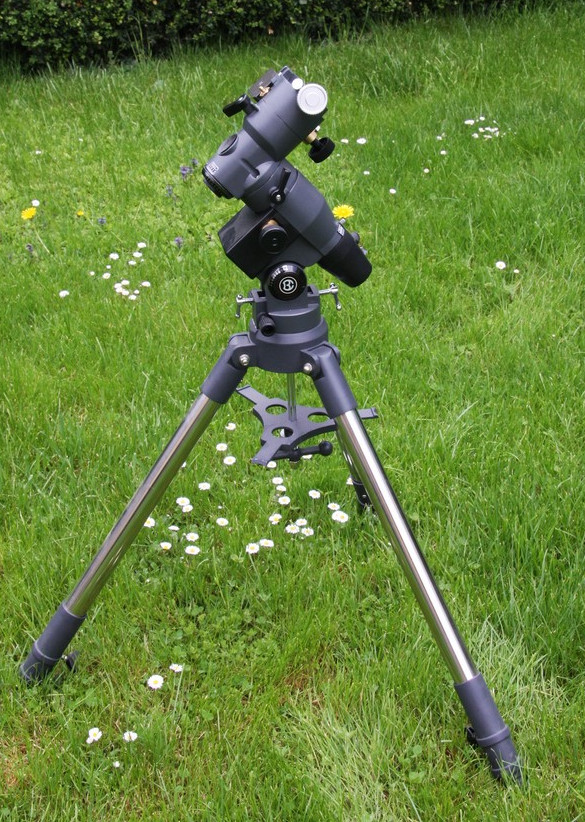Die große Schraube ganz unten hält die Montierung auf dem Stativ. Festziehen.
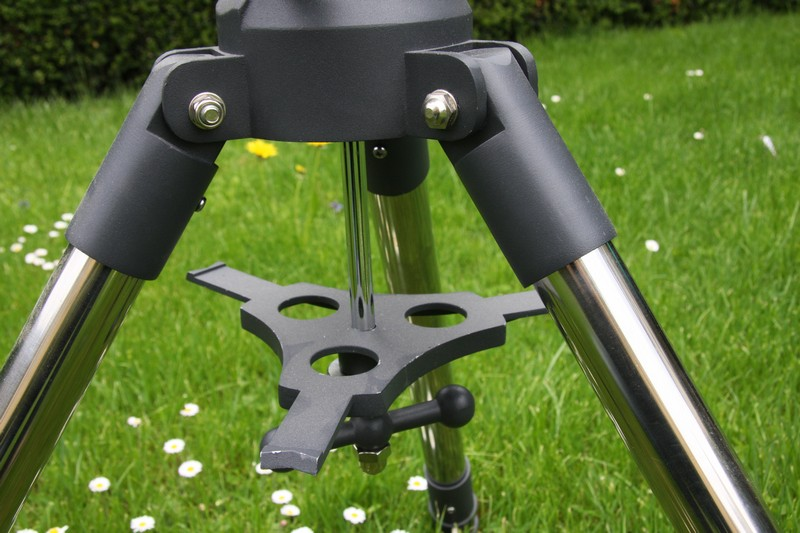Als nächstes den Okularhalter richtig hindrehen und mit der großen silbernen Schraube direkt darunter fest nach oben drücken
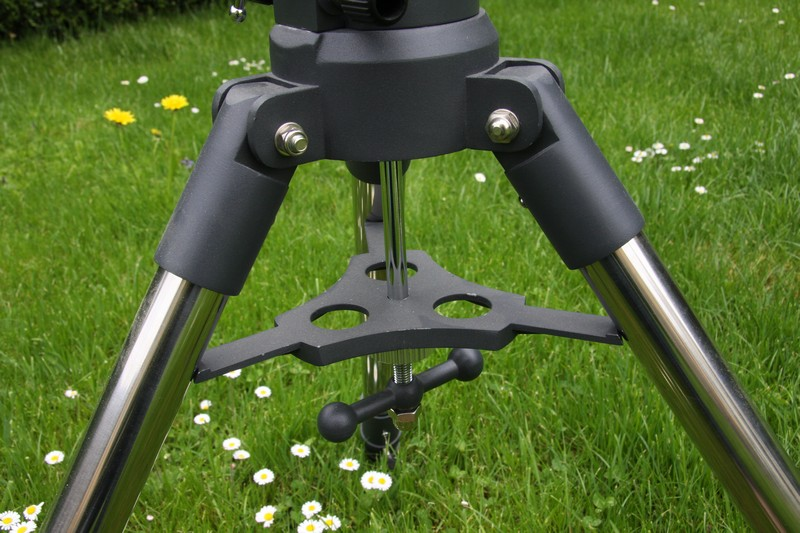Die Stativbeine ausfahren und das Teleskop so drehen, dass die Rektaszensionsachse etwa nach Norden ausgerichtet ist. Wenn man eine Wasserwage zur Hand hat, sollte man jetzt auch überprüfen, ob das das Stativ eben steht.
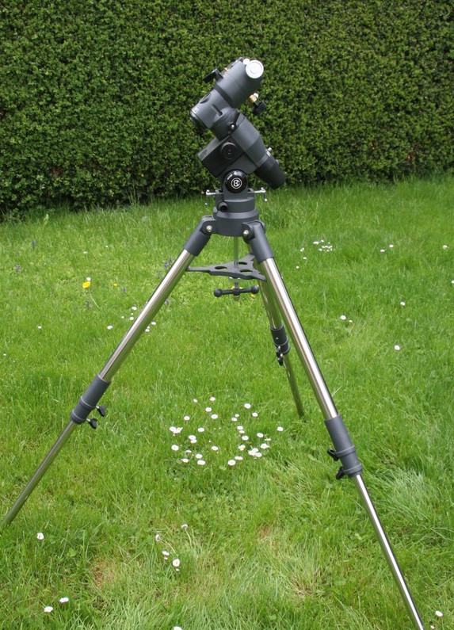Die Polhöhe sollte auf den Breitengrad (in Friedrichshafen also 37°39’ N) eingestellt sein
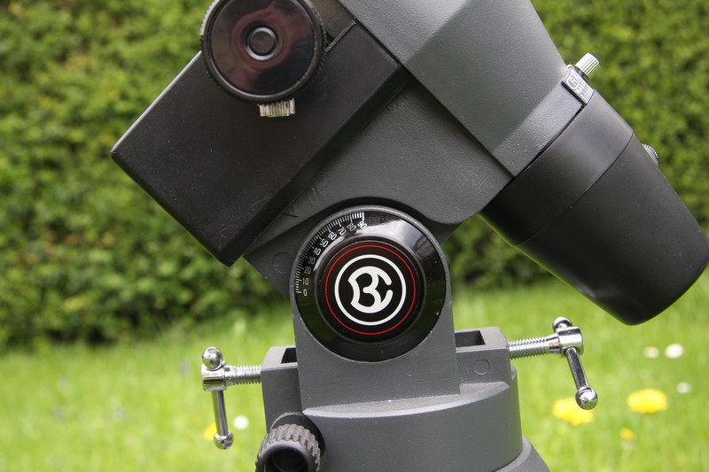Die Deklination so drehen, dass die große und kleine silberne Schraube nach oben zeigt. Diese halten später das Teleskop
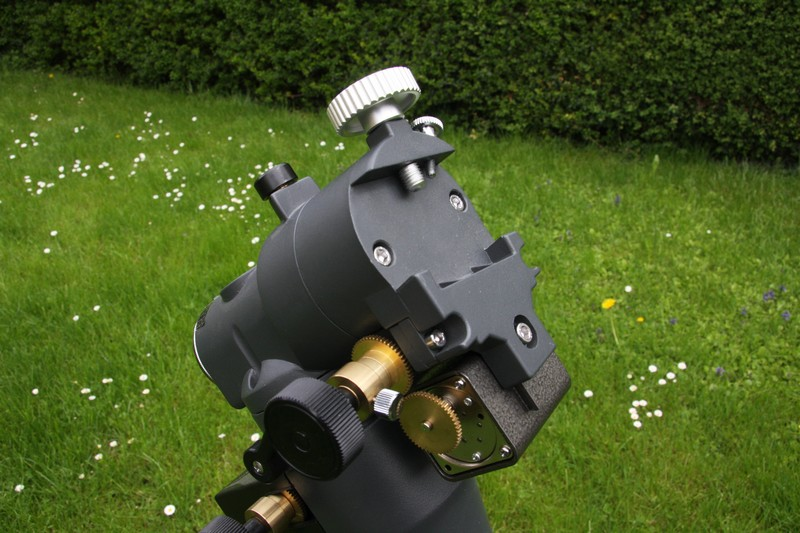Also nächstes wird die Haltestange für das Gegengewicht angebracht:
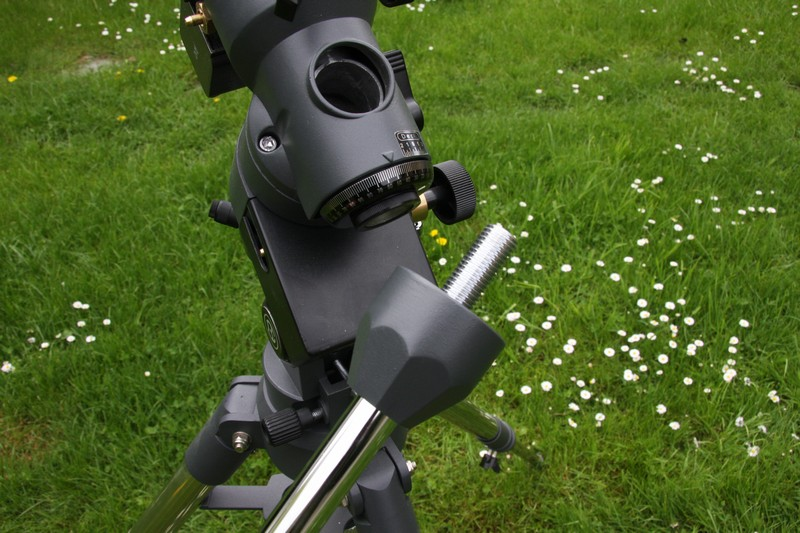Die Montierung sollte jetzt so aussehen:
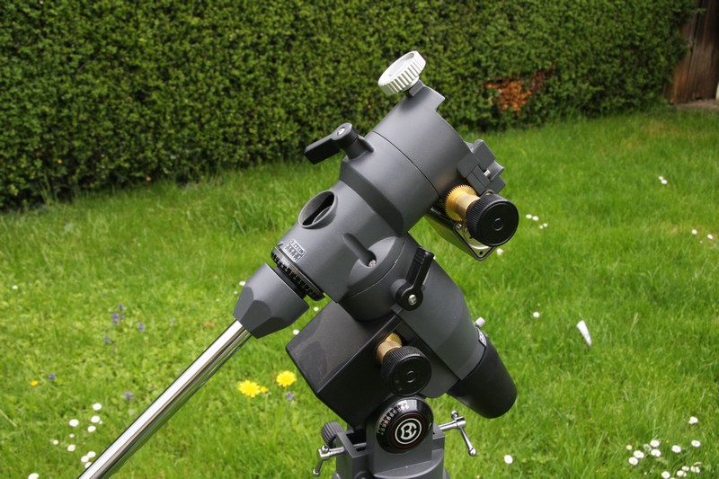Unten an der Stange ist eine kleine Schraube, die verhindern soll, dass das Gegengewicht herunterfällt, falls es einmal abrutschen sollte. Diese muss jetzt entfernt werden. Aufpassen, dass man sie im Dunkeln nicht verliert!
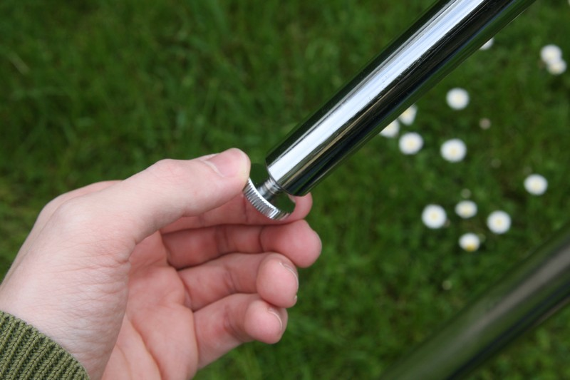In dem Loch im Gewicht ist ein kleines Stiftchen, das von der Schraube in der Mitte gehalten wird. Löst man sie etwas, kann man das Stiftchen zur Seite schieben und das Gewicht an der Stange befestigen. Die Sicherungsschraube danach sofort wieder anbringen. (Es sei denn natürlich, man mag es, wenn einem 5kg Gewichte auf den Fuß fallen...)
Als nächstes wird das Teleskop auf der Montierung befestigt. Bevor man das macht überprüfen, ob die Deklinations- und Rektaszensionsschrauben richtig angezogen sind. Außerdem sollte das Gewicht recht weit unten auf der Stange sein. Es ist auch einfacher, wenn man für diesen Schritt zu zweit ist, dann kann einer das Teleskop halten während der andere die Schrauben anzieht.
Als erstes müssen die beiden silbernen Schrauben ganz oben so weit herausgedreht werden, dass die Enden der Schrauben nicht mehr herausragen:
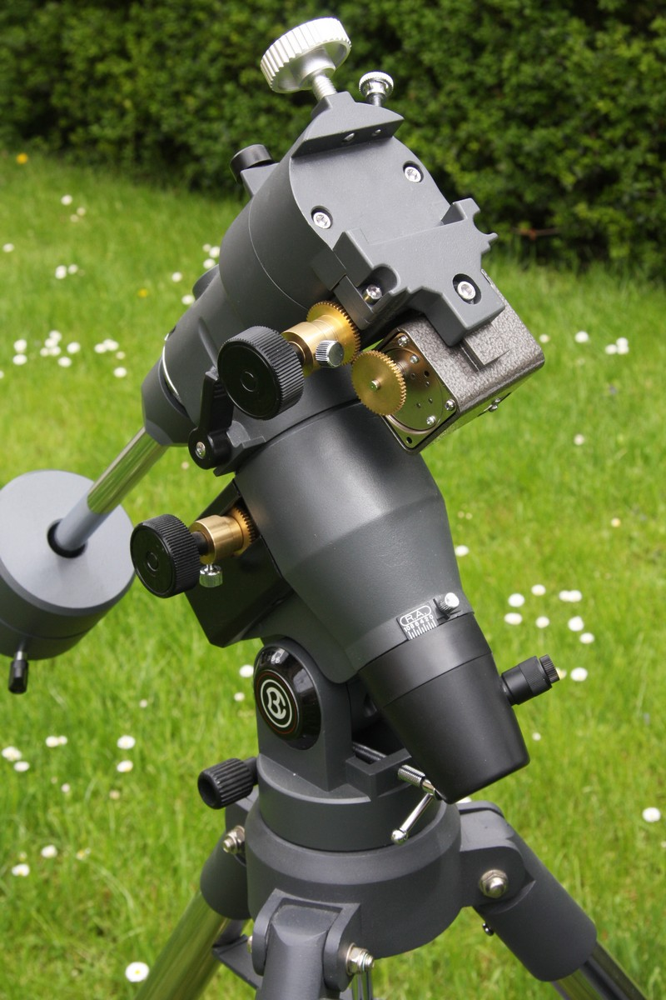Jetzt legt man das Teleskop so in die Mulde in der Montierung, dass die Schrauben am Tubus oben sind und die Kerbe an der Schiene auf die große silberne Schraube an der Montierung liegt:
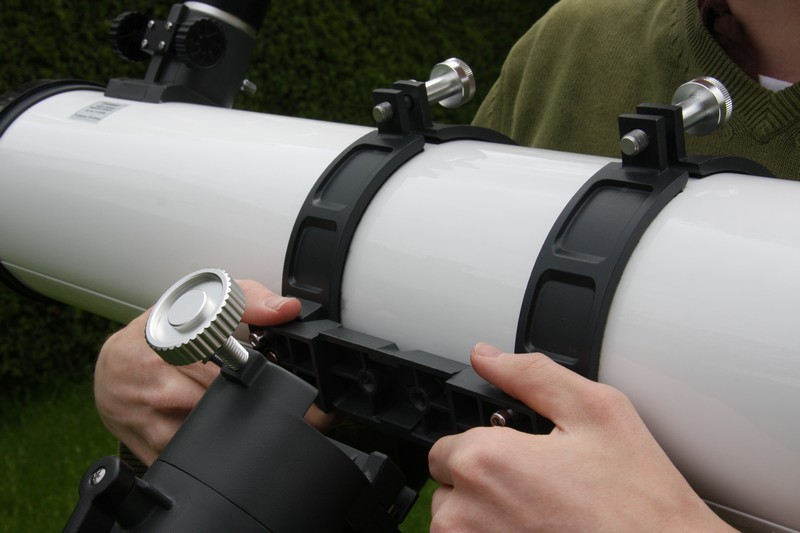Dann die zwei silbernen Schrauben festdrehen:
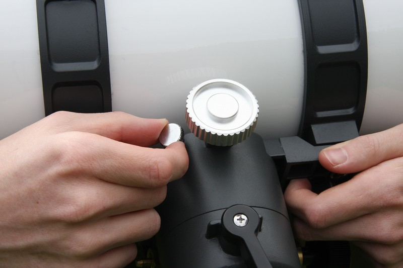Zum Schluss muss das Teleskop noch austariert werden. Dazu öffnet man zuerst die Deklinationsschraube und dreht das Teleskop etwas. Bewegt es sich von selbst wieder zurück, dann lockert man die beiden Tubusschrauben ganz leicht und verschiebt den Tubus ein kleines bisschen. Dann zieht man die Schrauben wieder an (nicht so fest, dass der Tubus verbiegt, aber fest genug, so dass er nicht rutschen kann). Das ganze wiederholt man so lange, bis sich die Deklination nicht mehr von alleine verändert, egal wie sie gerade eingestellt ist. Wenn man etwas schweres an dem Okularauszug befestigt (z.B. eine Kamera) ändert sich das Gewicht natürlich und man muss das Austarieren wiederholen.
Jetzt macht man das gleiche mit der Rektanzension. Diesmal muss natürlich das Gegengewicht verschoben werden.
Der Sucher verstellt sich leider recht häufig, er muss also meistens auch neu justiert werden. Objekte zu finden ist am Anfang schon mit einem gut eingestellten Sucher schwer genug, es lohnt sich also, diesen Schritt recht genau zu machen.
Zuerst legt man das schwächste Okular (also dass mit der größten Brennweite) ein und peilt ein markantes Objekt, das mindestens einige hundert Meter entfernt ist, an. Hat man es in der Mitte des Bildes im Teleskop fixiert man Deklination und Rektanszension und dreht an der Einstellschrauben am Sucher, bis das Objekt im Fadenkreuz steht. Dabei muss man machmal etwas rumprobieren, der Zeitaufwand lohnt sich aber.
Damit man die Erddrehung gut ausgleichen kann muss die Rektaszensionsachse auf den Himmelsnordpol ausgerichtet sein. Je genauer das ist, desto einfacher wird das Nachführen. Für visuelle Beobachtungen oder Videofotographie ist das Einnorden aber nicht sehr wichtig. Die Polhöhe sollte bereits richtig eingestellt sein, der Azimut kann mit den beiden schwarzen Schrauben unten an der Montierung verstellt werden (eine hinein- und gleichzeitig die andere herausdrehen). Zunächst kann man den Polarstern grob anpeilen, dazu schaut man mit einem Auge an der Rektanzensionachse vorbei Richtung Polarstern. Will man ein genaueres Ergebnis, dann kann z.B. man den Polsucher verwenden. Eine Anleitung hierfür ist in der offiziellen Teleskopbeschreibung. Wenn man länger belichtete Fotos macht – also Belichtungszeiten von Minuten bis Stunden – reicht ein grobes Einnorden natürlich nicht mehr. Meistens verwendet man dann die Scheiner-Methode.
Wenn man will, kann man die Motoren verwenden, um automatisch nachzuführen. Der Motor an der Rektaszension dreht das Teleskop dann ständig weiter und gleicht so die Erddrehung aus. Notwendig ist das definitiv nicht, man kann auch von Hand nachführen. Dann verwendet man am besten diese Verlängerung für die Rektaszension:
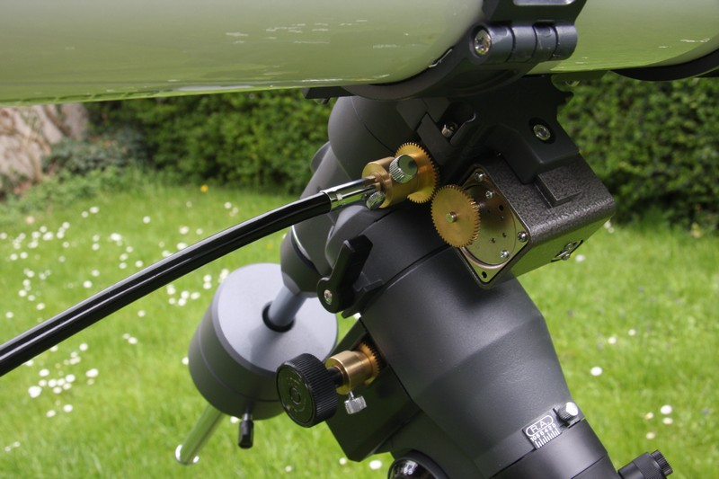Außerdem löst man die kleine silberne Schraube an den Drehknöpfen für Rektaszension und Deklination, damit die Motoren nicht ständig mitgedreht werden, wenn man die Drehknöpfe benutzt.
Will man die Motoren verwenden braucht man natürlich eine Stromquelle. Beim Teleskop ist ein Behälter für Batterien dabei, man kann aber auch einen Adapter für normalen Steckdosenstrom verwenden. Der sollte 12V Gleichstrom liefern und muss richtig gepolt sein: Innen + und außen -
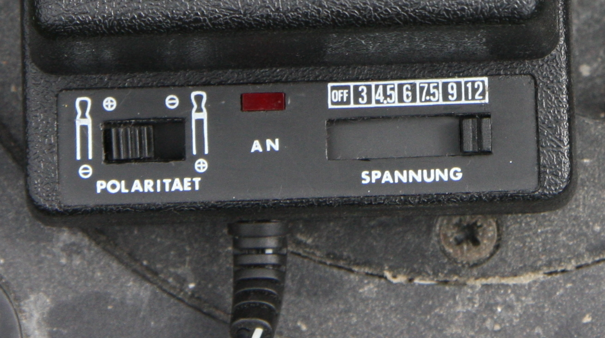Die Batterien oder der Adapter und die Motoren werden dann an die Fernbedienung angeschlossen.
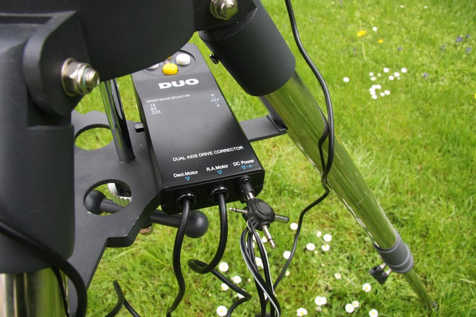